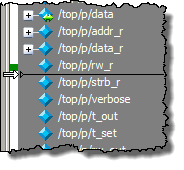

New signals are
inserted above the Insertion Point Bar located at the bottom of
the Pathname Pane. You can change the location of the Insertion
Point Bar by using the Insertion Point Column of the Pathname Pane.
Restrictions and Limitations
By default, new signals are added
above the Insertion Point Bar. You can change the default location
for insertion by setting the PrefWave(InsertMode) preference
variable to one of the following:
insert —
(default) Places new object(s) above the Insertion Pointer Bar.
append —
Places new object(s) below the Insertion Pointer Bar.
top —
Places new object(s) at the top of the Wave window.
end —
Places new object(s) at the bottom of the Wave window.
Prerequisites
There must be at least one signal
in the Wave window.
Procedure
- Click the vertical white bar
on the left-hand side of the active Wave window to select where
signals should be added. (Figure 1)
- Your cursor will change to
a double-tail arrow and a green bar will appear. Clicking the vertical
white bar next to a signal places the Insertion Point Bar below
the indicated signal. Alternatively, you can Ctrl+click the white
bar to place the Insertion Point Bar below the indicated signal.
Figure 1. Insertion Point Bar
- Select an instance in the
Structure (sim) window or an object in the Objects window.
- Use the hot key Ctrl+w to
add all signals of the instance or the specific object to the Wave
window in the location of the Insertion Point Bar.